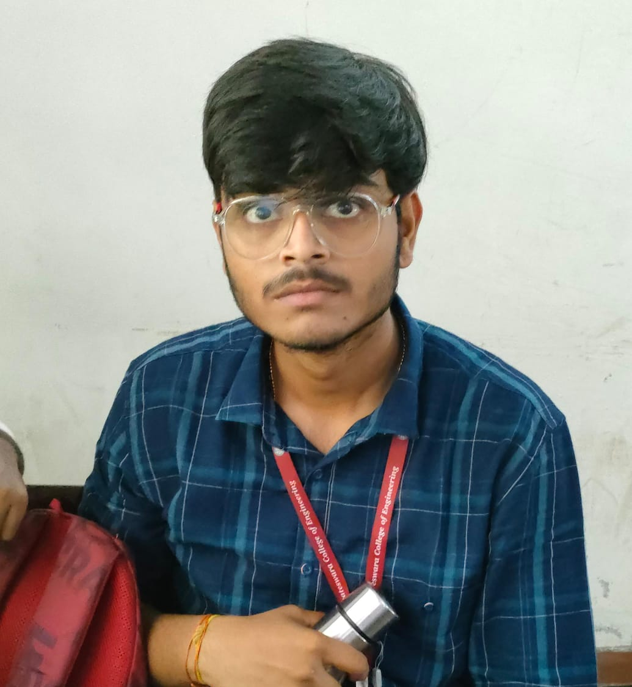
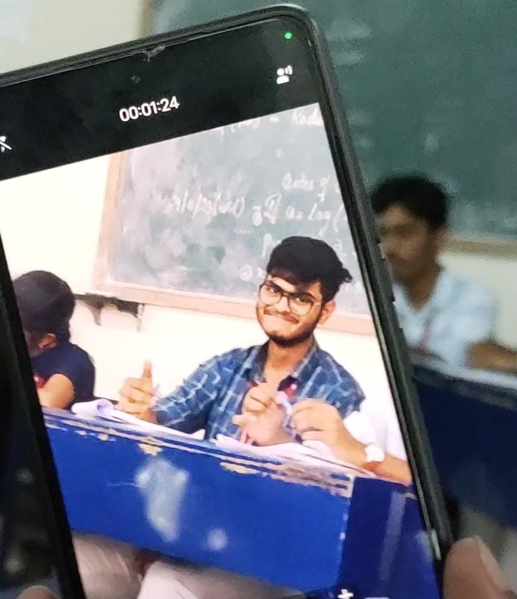

My Lovely Pics

CUTE
The image you see here is a cute image of jai harish giving a
rizzy look towards the viewers.
17TH APRIL

SMILE
This photo is taken during the Group Dicussion, where
Jai Harish patiently did nothing .This ultimately shows
his masterplanning skills.He smiles like a pure-holy baby
24TH NOVEMBER